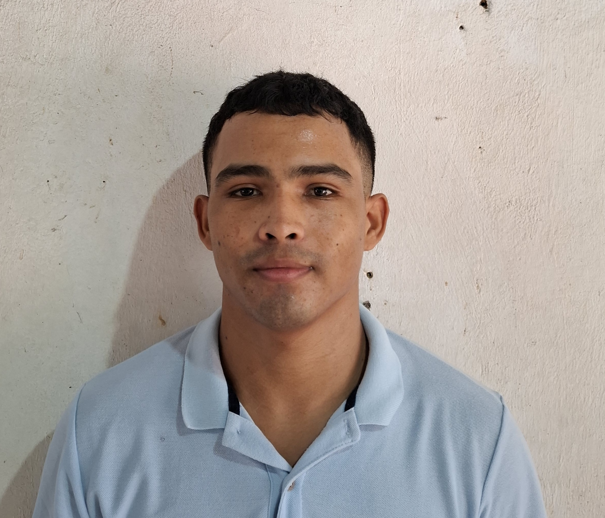

Brandon Castro
Ingeniero de Sistemas y Especialista en Ciberseguridad
Apasionado por la ciberseguridad ética y el desarrollo de herramientas para auditorías digitales. Busco fortalecer la defensa tecnológica de las empresas a través de la automatización, el análisis de vulnerabilidades y la educación en seguridad informática.
🧠 Perfil Profesional
Experiencia en análisis de vulnerabilidades, hacking ético, automatización en Python, y uso de herramientas como Burp Suite, Wireshark y Active Directory. Mi enfoque es ofrecer soluciones que fortalezcan la seguridad digital y protejan los datos frente a amenazas reales.
⚡ Perfil Personal
Me encanta el fútbol, el baloncesto y la música. Siento una gran curiosidad por la psicología y el comportamiento humano, especialmente en cómo influyen en la ingeniería social y la ciberseguridad.